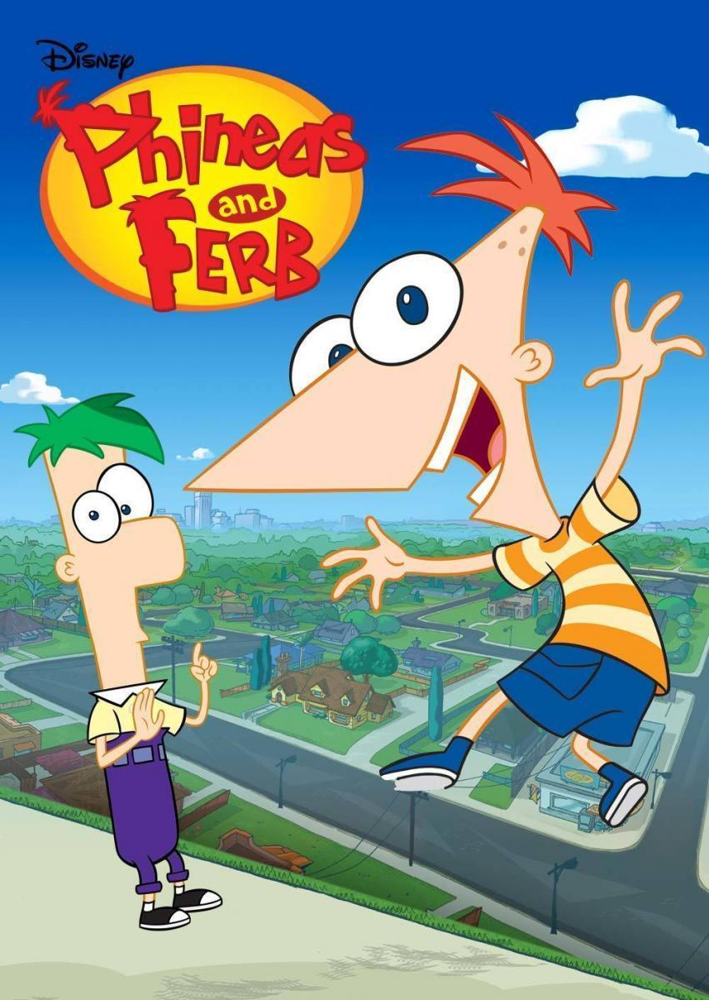

How I Met Your Mother
- GÉNERO: COMEDIA
- DURACIÓN: 9 SEASONS
- SINOPSIS: "How I Met Your Mother" es una serie de comedia que sigue a Ted Mosby mientras cuenta a sus hijos cómo conoció a su madre en Nueva York. Junto a sus amigos, Ted vive aventuras amorosas y cómicas mientras busca al amor de su vida, todo narrado con saltos temporales y un toque de misterio sobre quién será la madre. La serie explora temas de amistad y relaciones.
- RATING: 4.8/5
- ESTRENO: 19 SEP 2005
Modern Family

- ESTRENO: 23 sep 2009
- GÉNERO: Comedia
- SINOPSIS:La serie narra la vida de Jay Pritchett y su familia, todos vecinos del mismo barrio a las afueras de Los Ángeles, y gira en torno a tres tipos de familia: nuclear, extendida y con padres del mismo sexo y está basada en situaciones cómicas que podrían ocurrirle a cualquiera en la vida real.
- RATING:4.9/5
- DURACIÓN: 11 temporadas
Phineas y Ferb

- ESTRENO: 17 AGOSTO 2007
- DURACIÓN: 4 temporadas
- RATING: 4.8/5
- SINOPSIS: Phineas y Ferb son dos hermanastros que quieren disfrutar al máximo de las vacaciones de verano. No dejan de hacer trastadas y de inventar instrumentos imposibles como un monopatín gigante para sufrimiento de su hermana mayor Candice, que no les aguanta.
- GÉNERO: Infantil/ Animacion/Fantasia